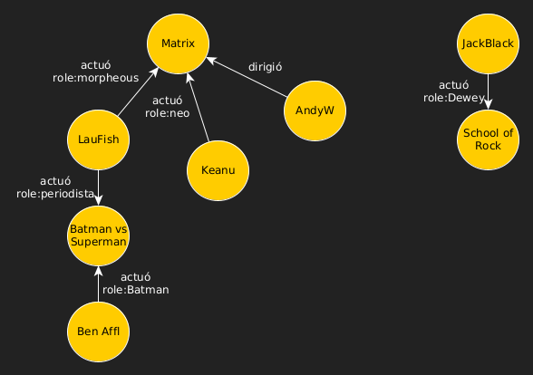

NoSQL
Diferentes Categorías
Diferentes Categorías
Existen 4 grandes categorías de Bases de Datos NoSQL
Ésta distinción es en base a como se persisten los datos físicamente
- Key-Value
- Column-Family
- Document
- Graph
¿Que vemos de cada una?
Estructura, Usos adecuados y Vendors
Key-Value Stores
- Las más simples y comunes. Column-family y Document estan basadas en esta.
- Posee tablas y filas al igual que una BD relacional.
- Cada fila esta conformada por: Una Key → Value (HashMap o Array Asociativo).
- Cada fila puede tener un Value con un esquema completamente diferente.
- Amazon DynamoDB, una de las primeras. Usada actualmente por Amazon (propietaria).
- Redis (open source), el mas conocido hoy
Key-Value Stores
- Cada fila tiene una key, clave primaría única.
- Y el value es un objeto/estructura de cualquier tipo.
- Cada fila es una session de usuario, junto a su perfil y carrito de compras.
- Redis Java Client
Key-Value Stores
Usos Adecuados
- Almacenar sesiones http, Carritos de Compras y Perfiles de Usuario: Cada sesión, perfil o carrito es identificado por una clave. Siempre se trabaja con ellos guardando todo y obteniendo todo a la vez vía la clave.
- Caching: Las soluciones de cache son muy utilizadas para escalar y también para mejorar la performance de cierta funcionalidad (Ej: type-ahead). Redis muy utilizado con este fin.
Apache TinkerPop
Gremlin Console: Instalación y Ejecución
Descargar de: http://tinkerpop.apache.org/
Ejecutar desde una consola:
> cd gremlin-console
> bin/gremlin.sh

Lenguaje Gremlin
Supongamos que tenemos el siguiente grafo (películas), con vértices "persona" y "película" y la propiedad "nombre".
Lenguaje Gremlin
Inicialización
gremlin> peliculas = TinkerGraph.open()
gremlin> peliculas.toString()
==>tinkergraph[vertices:0 edges:0]Lenguaje Gremlin
Creamos el Grafo "Películas"
peliculas = TinkerGraph.open()
g = peliculas.traversal()
keanu = g.addV("persona").property(T.id, 1).property("nombre", "Keanu").next()
andy = g.addV("persona").property(T.id, 2).property("nombre", "A. Wach...").next()
jack = g.addV("persona").property(T.id, 3).property("nombre", "Jack Black").next()
lau = g.addV("persona").property(T.id, 9).property("nombre", "L. Fishburn").next()
ben = g.addV("persona").property(T.id, 12).property("nombre", "Ben Affleck").next()
matrix = g.addV("pelicula").property(T.id, 4).property("nombre", "The Matrix").next()
batvsSup = g.addV("pelicula").property(T.id, 11).property("nombre", "Batman vs Superman").next()
school = g.addV("pelicula").property(T.id, 5).property("nombre", "School Of Rock").next()
g.addE("actuo").from(lau).to(batvsSup).property(T.id, 13).property("role", "periodista")
g.addE("actuo").from(ben).to(batvsSup).property(T.id, 14).property("role", "batman")
g.addE("actuo").from(keanu).to(matrix).property(T.id, 6).property("role", "neo")
g.addE("actuo").from(lau).to(matrix).property(T.id, 10).property("role", "morpheous")
g.addE("dirigio").from(andy).to(matrix).property(T.id, 7)
g.addE("actuo").from(jack).to(school).property(T.id, 8).property("role", "Dewey")
Lenguaje Gremlin
Creamos el Grafo "Películas"
Guardemos el script anterior como "pelis.grm", y luego desde la consola gremlin:
gremlin>:load pelis.grmNos quedará el grafo cargado en memoria listo para usar.
Lenguaje Gremlin
Graph Traversal
Una query/consulta sobre una base de datos de grafos generalmente se denomina "traversal" (recorrer), dado que de hecho es lo que hacemos.
gremlin>pelis = TinkerGraph.open()
gremlin>g = pelis.traversal()
Esto nos deja la variable "g" lista para empezar a recorrer el grafo.
Lenguaje Gremlin
Queries sobre Vértices: Algunos Ejemplos
//recupero todos los vértices
gremlin>g.V()
//recupero el vértice con ID 1
gremlin>g.V(1)
//recupero los vértices con label "persona"
gremlin>g.V().hasLabel('persona')
//recupero los vértices con propiedad nombre = "Keanu"
gremlin>g.V().has('nombre','Keanu')
//recupero los vértices "persona" con propiedad nombre = "Keanu"
gremlin>g.V().hasLabel('persona').has('nombre','Keanu')
//recupero todos los valores de las propiedades de los vértices 'película'
gremlin>g.V().hasLabel('pelicula').values()
//recupero los vértices que no tienen la propiedad "nombre"
gremlin>g.V().hasNot('nombre')
//cantidad de vértices
gremlin>g.V().count()
//cantidad de películas
gremlin>g.V().hasLabel('pelicula').count()
Lenguaje Gremlin
Queries sobre Relaciones. Muy similar que sobre los vértices
//recupero todas las relaciones
gremlin>g.E()
//recupero la relación con ID 5
gremlin>g.E(5)
//todas las relaciones con label "actuo"
g.E().hasLabel("actuo")
//todas las relaciones con la propiedad role = "batman"
g.E().has("role","batman")
Lenguaje Gremlin
Traversal: Recorriendo el grafo
//Parto de una o varias relaciones
gremlin>g.E().has("role","batman")
==>e[14][12-actuo->11]
//Quiero las propiedades del nodo del cual parte la relación
gremlin>g.E().has("role","batman").outV().values()
==>Ben Affleck
//Quiero las propiedades del nodo al cual llega la relación
gremlin>g.E().has("role","batman").inV().values()
==>Batman vs Superman
Lenguaje Gremlin
Traversal: Recorriendo el grafo
//Parto de uno o varios vértices
gremlin>g.V().has('nombre', eq('Keanu'))
==>v[1]
//Quiero las propiedades de las relaciones que salen del nodo
gremlin>g.V().has('nombre', eq('Keanu')).outE().values()
==>neo
//Quiero las propiedades de las relaciones que entran al nodo
gremlin>g.V().has('nombre', eq('Keanu')).inE().values()
==>(empty)
//Quiero las propiedades de los nodos a los que llego desde este nodo
gremlin>g.V().has('nombre', eq('Keanu')).out().values()
==>The Matrix
//Todas las pelis donde actuó Keanu?
gremlin>g.V().has('nombre', eq('Keanu')).out('actuo').values()
==>The Matrix
Lenguaje Gremlin
Traversal: Recorriendo el grafo
//Quienes dirigieron las películas donde actuó Keanu?
gremlin>g.V().has('nombre', eq('Keanu')).out('actuo').in('dirigio').values()
==>Andy Wachowisky
//Quienes actuaron en las películas donde actuó con Keanu?
gremlin>g.V().has('nombre', eq('Keanu')).out('actuo').in('actuo').values()
==>Laurence Fishburn
//Quienes actuaron en las películas donde actuaron los que actuaron con Keanu?
gremlin>g.V().has('nombre', eq('Keanu')).repeat(out('actuo').in('actuo')).times(2).values()
==>Ben Affleck